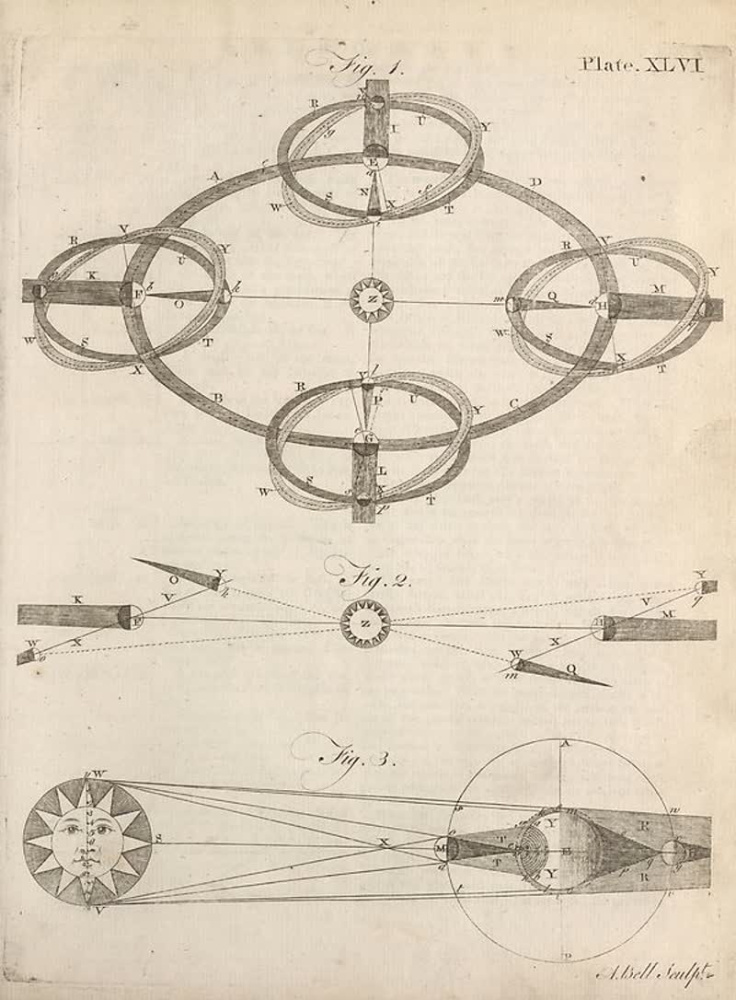

page-2209-1ee9bc409f67.jpg

Page ID: britannica:309f765b1ecc83e0a7f7762e44b4a927a7555443:train:2209
Running head:
Image SHA-256: 1ee9bc409f6798b0e4f4e45d63d75caae5197059df72701387ee24385cbff28e

(untitled) [?]
Plate. XLVI
Matched article: Kebon Kopi I inscription (Wikipedia, revision 1352627268, re-rank score -4.359375) · comparison
OCR issues
No OCR issues recorded for this page.